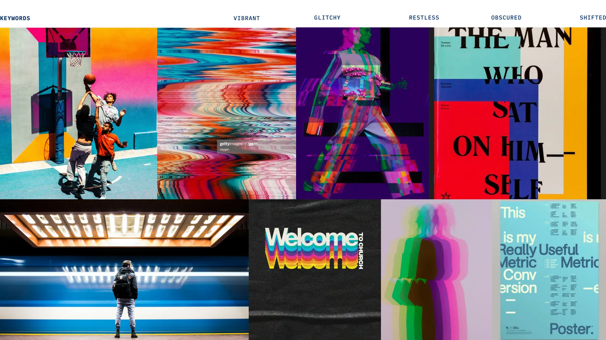
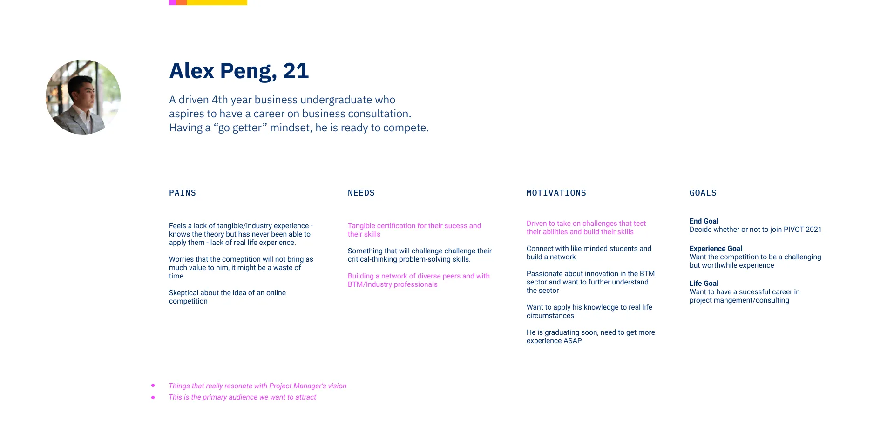
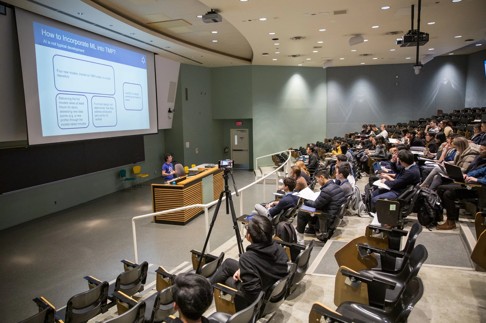
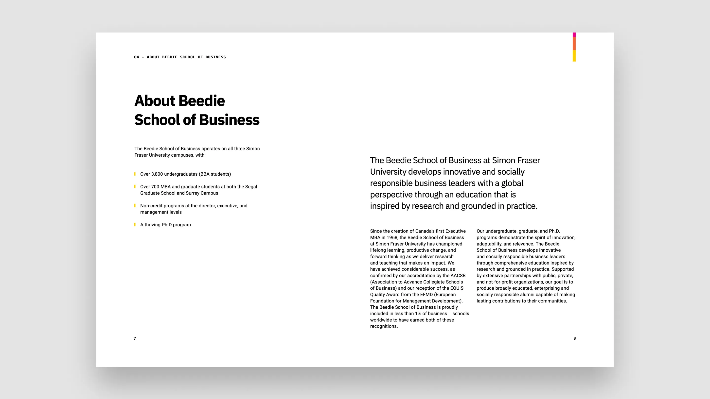
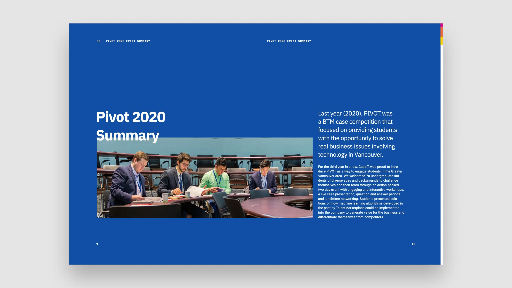

For the past 3 years, Pivot has been positioning itself as a local alternative to the CaseIT, a reputable international case competition hosted by the same organizing committee at Simon Fraser University.
I was a part of Pivot for two years, initially starting as a design coordinator then moving on to become a Co-Director of Design, alongside Alvin Leung. We took on the responsibility of developing a new visual direction that pivots on the brand identity, as well as utilizing that direction to create engaging graphics for the social media, while maximizing engagement by designing the feed.
I was a part of Pivot for two years, initially starting as a design coordinator then moving on to become a Co-Director of Design, alongside Alvin Leung. We took on the responsibility of developing a new visual direction that pivots on the brand identity, as well as utilizing that direction to create engaging graphics for the social media, while maximizing engagement by designing the feed.